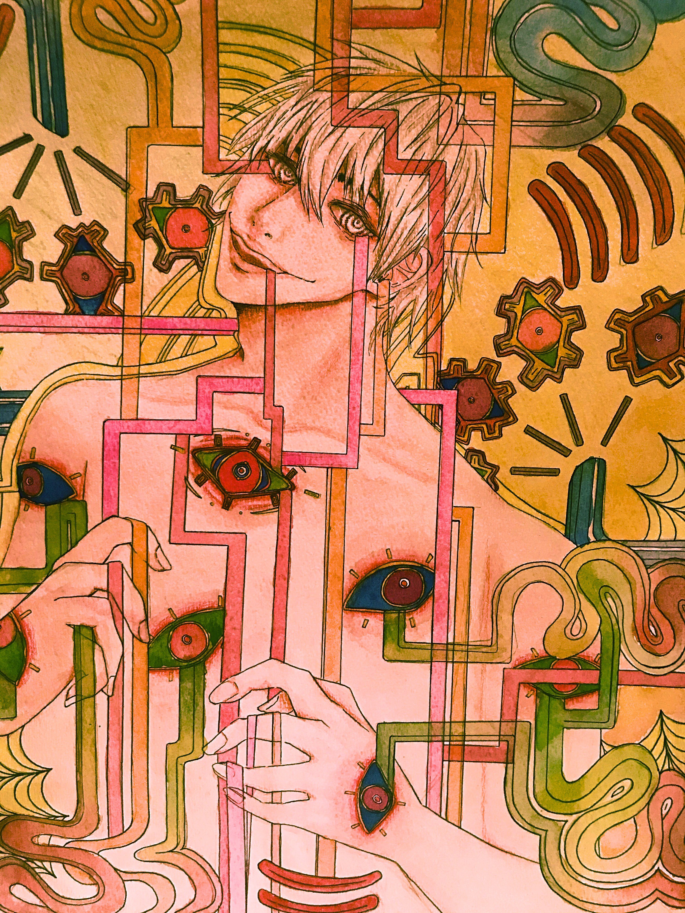
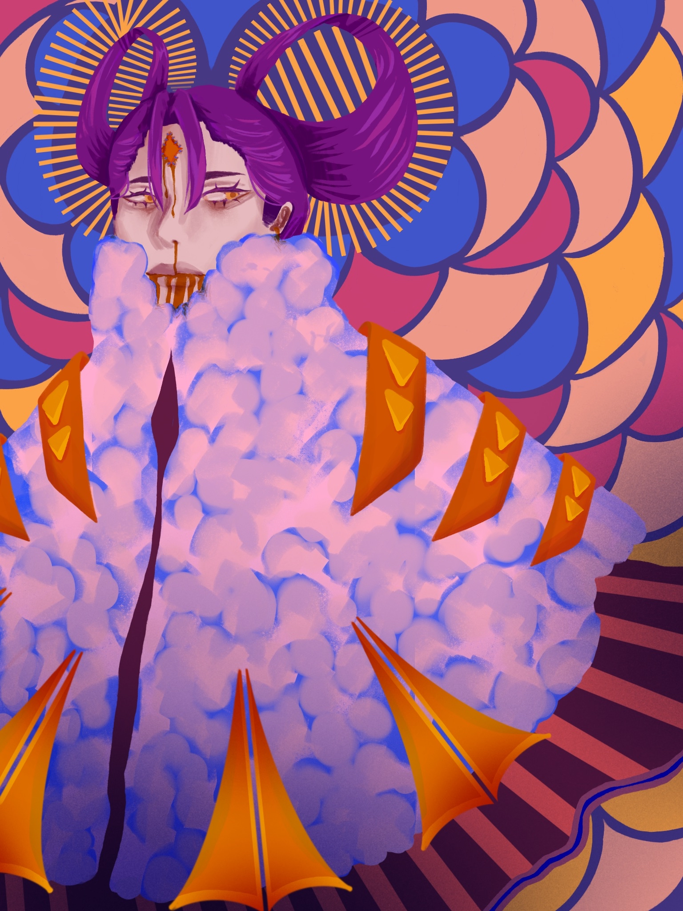
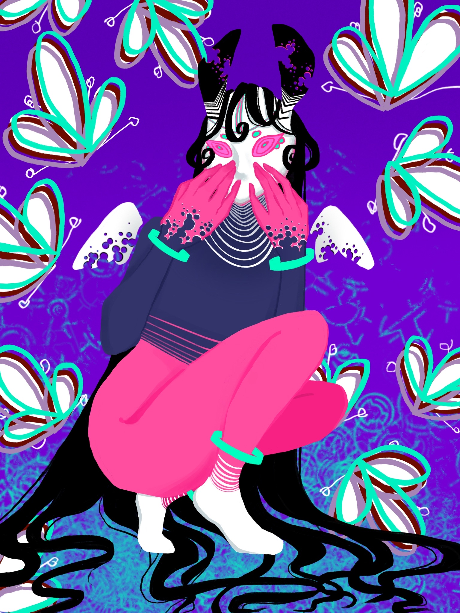
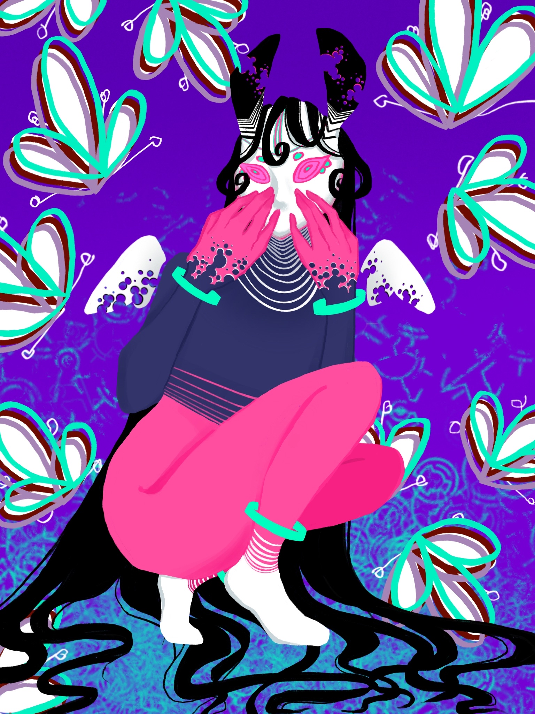
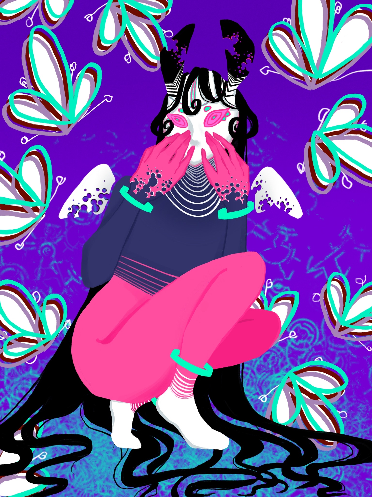

Akri Wong
My name is Akri Wong and I am a first year Psychology major at the University of California, Riverside.
I love to help others and have had a history of volunteering at schools around my area. I have aided teachers in school as a teacher’s assistant for multiple grades and classrooms in which I would assist in grading, classroom organization, and aiding students in their studies. I have also continued to help kids through tutoring while being a part of the Japanese National Honors Society where I would help students with beginner Japanese. This club has also brought me opportunities in which I helped to set up event spaces through food preparation, room setup, decoration setup, and more for elderly communities. Additionally volunteering at my local church for two years, I had sorted through hundreds of donation gifts in order to prepare them for delivery to up to 30 organizations. Much of my time volunteering has helped me grow a passion for helping and working together with others that has driven me to work hard in projects or other tasks.
Throughout my life, I have also developed many of my skills when it comes to art. I have a background in art and have been illustrating both self-taught and through academic institutions for 8 years. I have skills in both traditional media such as charcoal, acrylic painting, watercolor, and ink, as well as digital illustration. Art has also played a large part in my volunteer work as I have worked with other artists to create murals, posters, and paintings both for my past schools and the community. Being a part of the National Arts Honors Society, I had also provided libraries for their monthly art displays. This has also given me the opportunities to go to elementary schools and help teach students crafts for their after school activities.
Experience
After School Programs (Volunteering)
• Taught elementary students crafts once a month
• Worked with other artists to create easy and relevant craft ideas for kids
Donation Sorting (Volunteering)
• Responsible for sorting donations to prepare for delivery
• Organized hundreds of donation gifts going out to numerous organizations
Teaching Assistant (Volunteering)
• Aided teachers in classroom setup
• Graded student papers and helping students with academic studies
• Cleaned up classrooms to prepare for transition into summer programs
Education
UC Riverside
Portfolio


 

